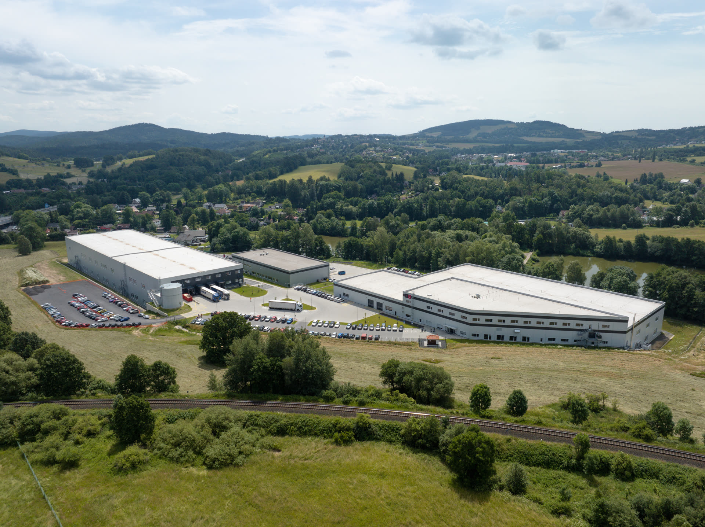

K Austisu 680, Praha 5 – Slivenec
Služby pro novostavby a rekonstrukce
Zajišťujeme generální dodávky novostaveb a rekonstrukcí pro developery a investory.
služeb
Služby pro novostavby a rekonstrukce
Zajišťujeme generální dodávky novostaveb a rekonstrukcí pro developery a investory.
Služby pro novostavby a rekonstrukce
Generální dodávka
Zajišťujeme generální dodávky novostaveb a rekonstrukcí pro developery a investory.
- Příprava a plánování
- Výběr a koordinace subdodavatelů
- Řízení harmonogramu
- Dokončení a předání
Pozemní stavby
Realizujeme novostavby a rekonstrukce rezidenčních, komerčních a provozních objektů.
- Rezidenční objekty a bytové domy
- Komerční a administrativní budovy
- Provozní a zemědělské areály
- Technická zařízení budov, inženýrské sítě a venkovní zpevněné plochy
Probereme rozsah vaší zakázky
Máte připravený projekt, nebo teprve vyjasňujete zadání? Napište nám. Domluvíme si nezávaznou konzultaci a upřesníme podklady potřebné pro posouzení spolupráce.